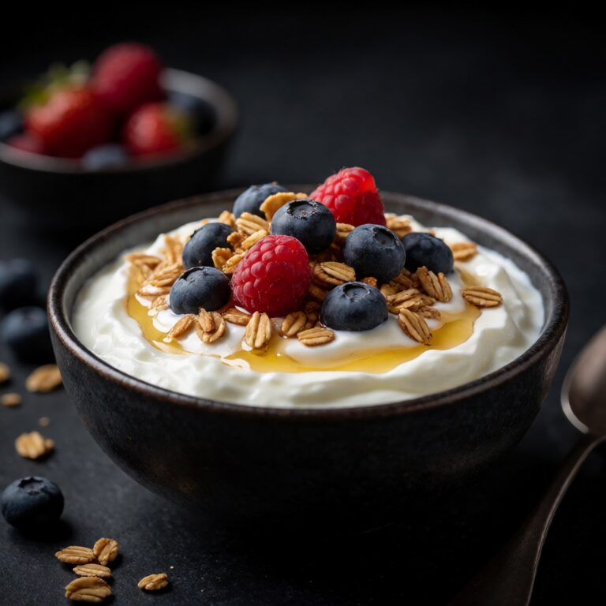
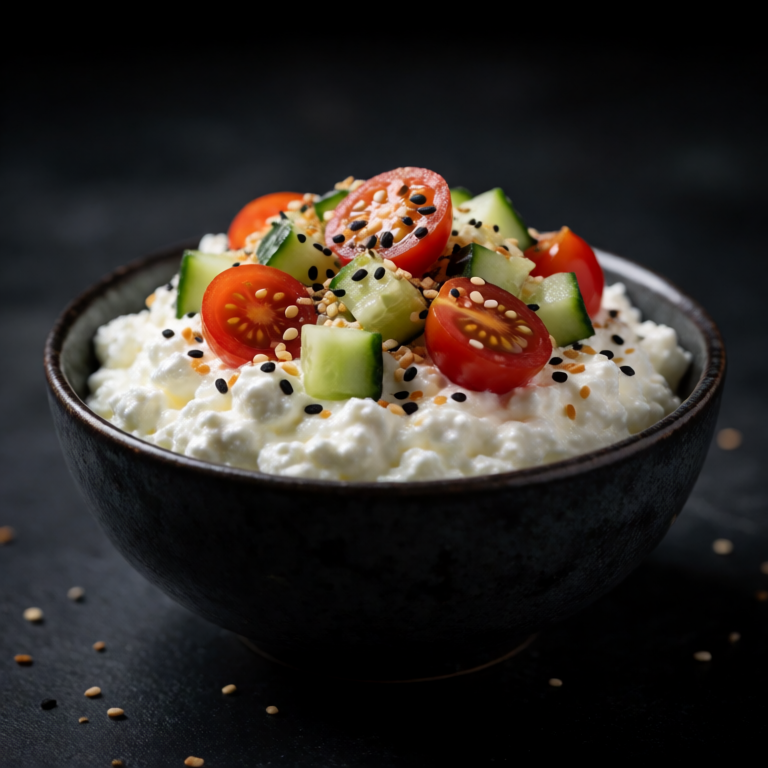

The viral protein bowl. Cottage cheese as the base for a savory, satisfying dinner.
At a Glance
Prep
5m
Cook
0m
Serves
1
Difficulty
Easy
Ingredients
Method
- 01
Bowl it
Scoop 1 cup of cottage cheese into a wide bowl. Arrange half a diced cucumber and a handful of halved cherry tomatoes on top. Season with 2 tablespoons of everything bagel seasoning, drizzle with olive oil or chilli crisp.
Slop Notes
Good Cultures or Kalona Supernatural cottage cheese are notably better than generic brands.
Recipe by foidslop · How we create our recipes